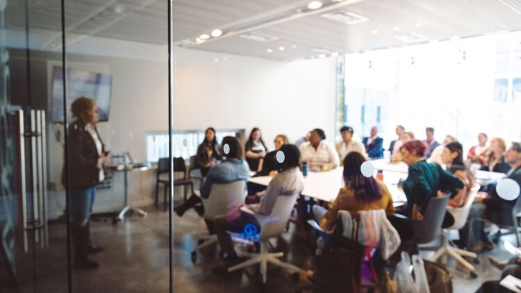
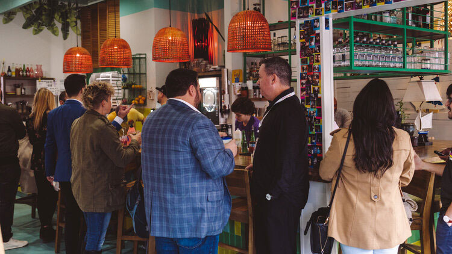

For founders who…
want to get in front of investors.
ROTATING STATEMENTS = DRAFT — final set pending companion file.
Every founder in this building started exactly here.
Not knowing isn't what disqualifies you. It's what the program is built for.
The Persistent Idea
"I kicked around this idea for a while" — not knowing what to do with it, or who to even go to.
The "Pretty Sure" Trap
You think it's a great product — but "pretty sure" is doing all of the heavy lifting.
Directionless Advice
Everyone says just start. Nobody tells you what concrete steps to start with.
Need for Evidence
You keep getting opinions. What you actually need to build with confidence is hard, empirical evidence.
The Silent Fear
The quiet fear underneath: what if you spend a year building something nobody wants?
Opportunity Machine partners with organizations that help startups scale quickly by providing access to a variety of exclusive perks & resources including free & discounted business services, connections to other startup communities, and educational content tailored to startup founders.
Partner logos pending permission reconfirmation.
The most expensive mistake isn't moving slowly. It's building confidently in the wrong direction.
Most founders build first and find out later. They spend a year and their savings on a product, then discover the customer they imagined doesn't exist — or exists, but won't pay.
We reverse the order. In Builder, you test your riskiest assumptions first: who your customer really is, what problem actually costs them money, and what they're already doing about it. Then whatever you build next, you build it knowing.
Some founders finish Builder with a validated path and real momentum. Others finish knowing their first idea wasn't it — before it cost them two years. Both walk out ahead.
Builder 1.0 changes that.
"You test your riskiest assumptions first. Then whatever you build next, you build it knowing."
There's a sequence. You don't have to invent it.
Most founders arrive somewhere between Chaos and Clarity. That's the right place to start.
Ideas, assumptions, and advice — all at the same volume.
OM helps you name the assumptions that kill the business if they're wrong.
You know exactly what you need to find out, and from whom.
OM helps you build your customer picture: who they are, what job they're hiring you to do.
You can point to proof instead of belief.
OM helps you run 15+ structured, honest customer conversations.
You've talked to real customers. You speak from what they told you.
OM helps you turn conversations into decisions: what to build, what to charge, what to drop.
You know your next move and why. Investors can tell the difference.
OM helps you pitch from evidence — or pivot with your time and savings intact.
Four questions. Ten weeks.
A cohort of founders answering them alongside you.
Know Your Customer
Get specific about who this is for and what job they're hiring you to do.
"Could you name, right now, the exact person who'd pay for this — and what they do about the problem today?"
You leave withA sharp customer picture, tested against 15+ real conversations.
Prove the Value
Turn what customers told you into an offer they'd recognize as theirs.
"How many people outside your family have told you — in their own words — that this problem costs them money or time?"
You leave withA value proposition built on evidence, and the first shape of your MVP.
Find Your Way to Market
Figure out how customers will actually find you — and what it costs to reach them.
"If you launched tomorrow, where would your first ten customers come from?"
You leave withA go-to-market plan with a first channel to test, not a wish list.
Make the Business Work
Pressure-test the money: what you charge, what it costs, whether the math survives.
"What would have to be true about your pricing for this to pay you back?"
You leave withA business model you can defend in an investor conversation.
Eight Sessions. One Arc.
A structured path from raw idea to Demo Day — evidence-driven at every step. Here's the shape of the journey and what you walk out with.
JTBD + Buying Center
Pin down the real job your customer is hiring you for — and who actually signs off on the purchase.
Discovery Plan
Design customer interviews that surface real behavior and evidence — not speculation or polite lies.
UVP + MVP
Turn early signal into a sharp value promise and a lean, buildable first product to test it.
Evidence to Strategy
Read what your interviews actually told you — honestly — then decide how you'll win the market.
AI-Assisted Build
Take a validated, positioned plan into production and ship your MVP faster than you thought possible.
Traction + Revenue
Pick the channel to reach your customers and stress-test whether the unit economics actually work.
Measure + Test Next
Build a focused measurement system and the feedback loops that keep the venture learning after launch.
Demo Day + Mentors
Pitch what you've built and bridge from program to practice with the mentor network behind you.
Every session pairs a working framework with live workshop time and a 1-on-1. The frameworks are taught inside the cohort.
Entrepreneurship is solitary, but it doesn't have to be lonely.
Our cohorts are designed for radical transparency and peer-to-peer accountability.
Peer Support
The most valuable insights often come from those just one step ahead of you.
Accountability
Surround yourself with builders who won't let you settle for "good enough."
Shared Infrastructure
Moving beyond assumptions to evidence-based growth.
Battle-Tested Catalysts.
We don't do "advisors." We have mentors — founders, connectors, and industry veterans who have built, scaled, and exited.
Strategic Guidance
Direct access to founders who have successfully scaled and exited. No fluff, just battle-tested strategy.
Radical Candor
Feedback that hurts but helps — direct, evidence-based, and aimed at helping you win.
Connector Access
Our mentors open doors to investors, partners, and customers that would otherwise remain closed.
Industry Expertise
From SaaS to hardware, our network spans industries with deep operational knowledge.
Real founders. Real momentum.
Specific founder quote tied to a hero progress claim (e.g. investor introductions). Pending consent reconfirmation.
Specific founder quote tied to a hero progress claim. Pending consent reconfirmation.
We don't just provide space; we provide the spark.
Join our strategic events designed to accelerate your professional growth.

Expert Workshops
Deep dives into unit economics, marketing, and operational scale.

Founder Mixers
Exclusive networking with the Gulf South's top builders and investors.
Pitch Pressure
A high-stakes environment to refine your pitch before the real deal.